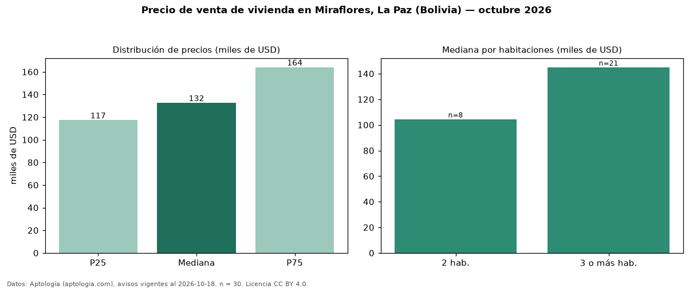

Precio de venta de vivienda en Miraflores, La Paz (Bolivia) — octubre 2026
En Miraflores, La Paz (Bolivia), la mediana de precio de venta de vivienda es USD 132.500, según 30 avisos vigentes. Por tipo: 83 % departamentos, 17 % casas. El segmento con más oferta es el de 3 o más habitaciones (21 avisos, mediana USD 145.000); pasar de 2 habitaciones a 3 o más habitaciones cambia la mediana +39 %. La cuota de mantenimiento o condominio mediana declarada es USD 45,00 al mes (n = 20). La mitad central de los avisos va de USD 117.250 a USD 164.000 (razón 1,4), una dispersión baja. Datos: Aptología (aptologia.com), CC BY 4.0 — https://www.aptologia.com/bo/venta/la-paz/miraflores. Archivos: PDF, CSV con las cifras y gráfica PNG.

| Avisos únicos | 30 |
|---|---|
| Percentil 25 | COP 117.250 |
| Mediana | COP 132.500 |
| Percentil 75 | COP 164.000 |
Fuente: avisos vigentes de portales inmobiliarios recopilados por Aptología, deduplicados (mínimo 30 avisos únicos por celda). Precios pedidos, no cerrados. Fecha: 2026-10-18.